ON THE CASE!Concept 03 / Arcane game detective
13 depth layers · SVG

Decorative investigation sequence — not live progress. Open original version ↗
Inspect autonomous image-mode playback

Image mode plays CSS animation without scripts. Open standalone or use the interactive scene above for pointer parallax.